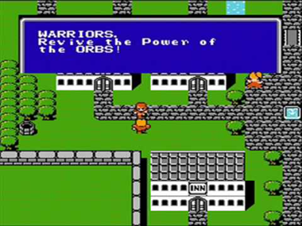
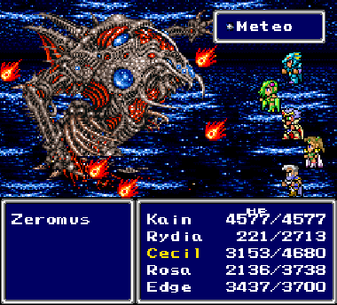
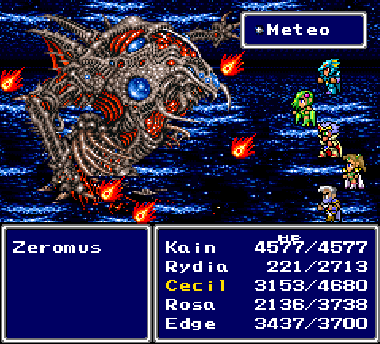
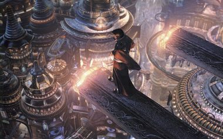
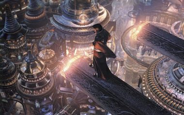

Final Fantasy I
NES, 1987
The very first game of the storied franchise, Final Fantasy I is really little more than a glorified dungeon crawl. Light on story and graphics, but heavy on grinding, it only bears a superficial resemblance to the entries that followed it.
Your party are the four Warriors of Light, heroes of prophecy who will return the elemental crystals to their rightful place and restore balance to the world. Why exactly your characters are the Warriors of Light and why every random villager seems to already know this is never explained.
Party Size: 4
Playable Characters: 4


Final Fantasy IV
SNES, 1991
The first entry of the 16-bit SNES era, Final Fantasy IV was originally released in North America as Final Fantasy II, as the real II and III had not been released Stateside. In subsequent years, it has been rereleased on multiple platforms and even gotten a sequel in the form of Final Fantasy IV: The After Years . Featuring a large, rotating cast of playable characters, it also boasts an explorable world that includes a vast subterranean underworld and a small moon.
Party Size: 5
Playable Characters: 12
 

Final Fantasy V
SNES, 1992
The last game of the main series to not see a timely release in North America, Final Fantasy V is one of only a few games in the series to use the Job System, wherein each playable character's role and abilities can change throughout the story as needed rather than being limited to a given archetype.
As with other Final Fantasy games built around the Job System, the real strategy revolves around frequent tinkering and adjustments of each character's job to best respond to whatever challenge is next. The trade-off is that the characters have little depth and are rather generic, best exemplified when one character (Galuf) dies and is replaced by his granddaughter (Krile), who literally has the exact same stats as Galuf.
Party Size: 4
Playable Characters: 5


Final Fantasy VI
SNES, 1994
Considered by many to be the best entry in the series, Final Fantasy VI was originally released in North America as Final Fantasy III. Boasting the largest playable cast of the main series, many of the characters are given considerable depth well beyond anything the series had seen to that point.
The seeds of the grandeur and scope found in later games is present here. Your party participates in an opera. The final boss theme is an 18-minute, multi-movement epic. The villain sets off a cataclysmic reshaping of the face of the world midway through the story. All in all, Final Fantasy VI has a beloved reputation that is well- earned.
Party Size: 4
Playable Characters: 16


Final Fantasy VII
Playstation, 1997
Final Fantasy VII marks a watershed moment in the history of Final Fantasy. It saw the departure of Square (now Square-Enix) from Nintendo to Sony due to Nintendo's use of cartridges (which have less data storage than discs) for its N64 console. It also abandoned the confusing renumbering system between Japanese and North American releases of the game (incidentally, itself causing confusion to gamers who last played "Final Fantasy III" and wondered what happened to IV-VI). Most obviously, it was also the first 3-D entry in the franchise.
VII saw a new flavor for the series with its cyberpunk aesthetic and its embrace of futurism, albeit a gritty, dirty future. It also took on a more "mature" feel with its various themes and settings (not to mention the salty dialogue by two of the main characters that Nintendo would never have allowed).
With this game, the Final Fantasy series was truly vaulted into the mainstream, gaining heretofore untold popularity. Its heroes and villains became iconic, it spawned a smorgasbord of sequels, prequels, "mid-quels", and now even an extensive remake, across a variety of platforms and media. It remains to this day the most popular game in series history.
Party Size: 3
Playable Characters: 9


Final Fantasy VIII
Playstation, 1999
Warning: I will not be charitable toward this game.
As Square's first main series follow-up to VII, there was always a heavy burden of expectation on Final Fantasy VIII. It is probably safe to say that it didn't live up to it. Considered a "divisive" game, its story focused on the romance between its two leads, Squall Leonhart and Rinoa Heartily. If those names alone don't make you roll your eyes, then maybe you were the target audience for this game.
I don't fault this game for trying something experimental with its mechanics. More main series Final Fantasies should be ambitious in that respect. I do fault them for settling on something that's very cumbersome and joyless, though. The Draw system, whereby spells were drawn from enemies in combat, slowed the game down considerably and made combat, already-repetitive on its own, feel like a downright chore.
I will also pick on them—mercilessly—for hyping up a love story centered around a pouty jerk and a vapid bimbo. The two lead characters are thoroughly uninteresting and unlikeable, and their character arcs are obviously manufactured in an almost heavy-handed way.
If you like Final Fantasy games with a heavy dose of glossy, high-tech futurism, a resoundingly unenjoyable combat system, a severe lack of genuinely interesting characters, and all the 90's emo teen romance your heart could ask for, then sure, give this game a try. Otherwise, find a different one to play. Or read a book. Or write one! Start a garden. Pick up a new hobby. I'm serious, this game is NOT worth it!
Party Size: 3
Playable Characters: 10

Final Fantasy IX
Playstation, 2000
The first game released after Square merged with Enix, Final Fantasy IX was, in many ways, the end of an era and a love letter to Final Fantasies I-VIII. It particularly drew heavily on references to the first three entries in the series, with a smattering of call-backs to later games.
IX was a return to the series's high-fantasy roots, trading in the futuristic settings of VII and VIII for a vividly colorful swords-and-sorcery landscape that long-time fans were more familiar with. It was also flavored with more humor and light-heartedness than its two most recent predecessors. The cartoonish, sometimes playful character designs spoke to a more childlike embrace of the fun and whimsical aspects of Final Fantasy.
While far from perfect, Final Fantasy IX is a fun and approachable entry in the series canon. Its characters can be surprisingly deep every now and then (Vivi the black mage is ranked by many fans as their favorite character all-time, and I would add it's not undeserved), and its themes of belonging are explored in a good variety of ways.
Party Size: 4
Playable Characters: 12


Final Fantasy X
Playstation 2, 2001
Some filler text about the game.
Party Size: 3
Playable Characters: 7
 

Final Fantasy XII
Playstation 2, 2006
Some filler text about the game.
Party Size: 3
Playable Characters: 6


Final Fantasy XIII
Playstation 3, 2009
If you thought I was unkind to Final Fantasy VIII, well... Buckle up.
Party Size: 3
Playable Characters: 6